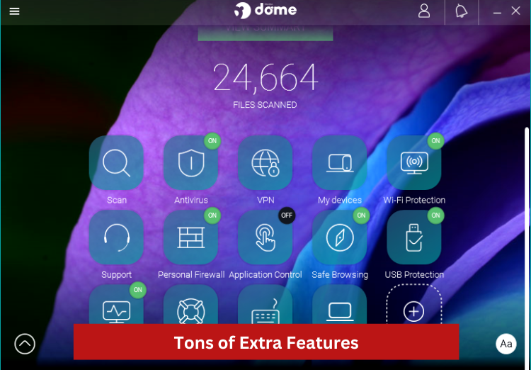
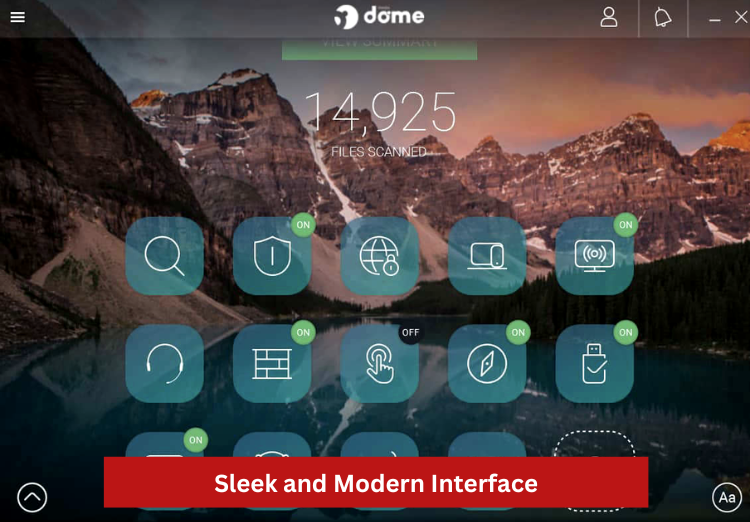

SHORT ON TIME? HERE’S A QUICK SUMMARY
Founded in 1990, Panda Security is a Spanish multinational company with more than 30 years of experience in cybersecurity. It started with antivirus software, but it has since expanded into an array of cybersecurity products and services. Today, it protects more than 30 million users in 180+ countries. Panda Security provides tailor-made security solutions for your office and home devices, covering laptops, desktops, tablets, smartphones, and even smartwatches. On top of the advanced antivirus features, this suite also comes with extra protection modules such as a VPN, parental controls, password manager, and a standalone USB antivirus program. Panda Security is compatible with Windows, macOS, Android, and iOS.
You’ll also get bonus features you won’t find in other antivirus software such as file encryption, file shredder, and Panda USB Vaccine. The USB Vaccine allows users to “vaccinate” their PCs in order to disable AutoRun, so that no program from any USB/CD/DVD drive (whether previously vaccinated or not) can auto-execute. It lowers the risk of malware infecting new machines via USB drives. Furthermore, Panda Antivirus offers a free version that protects against viruses in real-time, which is something you don’t see in other antivirus programs.
Panda Security also has one of the most appealing user interfaces of any antivirus program we've reviewed. The pretty icons on a transparent nature-inspired background were such a visual treat. Of course, we all know that there's more to an antivirus than meets the eye, so let's dive in and examine the more substantial aspects, such as their features, pricing, performance, customer service, independent lab tests results, and more.
Founded in 1990, Panda Security is a Spanish multinational company with more than 30 years of experience in cybersecurity. It started with antivirus software, but it has since expanded into an array of cybersecurity products and services. Today, it protects more than 30 million users in 180+ countries. Panda Security provides tailor-made security solutions for your office and home devices, covering laptops, desktops, tablets, smartphones, and even smartwatches. On top of the advanced antivirus features, this suite also comes with extra protection modules such as a VPN, parental controls, password manager, and a standalone USB antivirus program. Panda Security is compatible with Windows, macOS, Android, and iOS.
You’ll also get bonus features you won’t find in other antivirus software such as file encryption, file shredder, and Panda USB Vaccine. The USB Vaccine allows users to “vaccinate” their PCs in order to disable AutoRun, so that no program from any USB/CD/DVD drive (whether previously vaccinated or not) can auto-execute. It lowers the risk of malware infecting new machines via USB drives. Furthermore, Panda Antivirus offers a free version that protects against viruses in real-time, which is something you don’t see in other antivirus programs.
Panda Security also has one of the most appealing user interfaces of any antivirus program we've reviewed. The pretty icons on a transparent nature-inspired background were such a visual treat. Of course, we all know that there's more to an antivirus than meets the eye, so let's dive in and examine the more substantial aspects, such as their features, pricing, performance, customer service, independent lab tests results, and more.
👍 PROS:
- 24/7 Real-time protection for all your devices plus extra modules such as Parental Control, Cleanup, Password Manager, PC Recovery, Identity Protection, and more
- Excellent detection rate in the Real-World Protection Test
- Offers WiFi protection against hackers
- Free and premium VPNs available
- Extremely low maintenance, requiring very little interaction
- It's lightweight, so it doesn't require a lot of memory space to run this software on your computer
- Available on all types of devices — computers, laptops, tablets, and mobile phones
- The control panel lets you manage all of the features simply and easily
- Very easy to configure and works well even on default settings
- The reasonable price tag makes it a great option for home users and small businesses on a budget
- The safe navigation system keeps your bank keys, account numbers, and other sensitive information safe and secure.
- 30-day money-back guarantee
👎 CONS:
- The free VPN is limited to 150MB/day
- 24/7 technical support is available only for Premium users
- Some reports can be a little hard to customize
Get Panda - Protect Your Devices!
PANDA KEY DATA
GENERAL INFO:
Price: From $17.49
Money-back Guarantee: YES
Platforms: PC, Mac, Android, and iOS
SCANNING:
Real-time Antivirus: YES
USB Virus Scan: YES
Auto Virus Scanning: YES
Manual Virus Scanning: YES
Registry Startup Scan: YES
Scheduled Scan: NO
THREAT TYPE:
Anti-Spyware: YES
Anti-Trojan: YES
Anti-Phishing: YES
Adware Prevention: YES
Anti-Ransomware: YES
Anti-Malware: NO
Email-Protection: NO
Anti-Worm: YES
Anti-Rootkit: YES
Anti-Spam: NO
Chat/IM Protection: NO
EXTRA FEATURES:
Personal Firewall: YES
Password Manager: YES
Identity Theft Checker: YES
Ad Blocker: YES
Gamer Mode: YES
Smartphone Optimizer: NO
Safe Browser: YES
Parental Controls: YES
VPN Service: YES
Device Tune-up: YES
SUPPORT:
Live Chat: NO
Email Support: NO
Phone Support: NO
Ticket Support: YES
WHO IS BEHIND PANDA SECURITY?
Panda Security is a Spanish multinational company that specializes in the development of cybersecurity solutions, including the Panda Antivirus software. The company was founded in 1990 by Mikel Urizarbarrena and is headquartered in Bilbao, Spain. Panda Security has a global presence, with offices in Europe, Latin America, and Asia, and its products and services are used by individuals, small businesses, and large enterprises worldwide.
WHAT EXACTLY IS PANDA ANTIVIRUS?
Panda Antivirus is a software program developed by Panda Security that is designed to protect computers from various types of malware, including viruses, spyware, and adware. The software uses advanced security features, such as real-time protection and behavioral analysis, to detect and block malware before it can harm the computer. Panda Antivirus also includes additional security tools, such as a firewall, parental controls, and a safe browsing feature, to provide comprehensive protection against a wide range of online threats. The software can be installed on a single computer or multiple computers as per the user's needs. The company also provides the cloud based version of the software which is Panda Dome, it provides the same features but the software and the updates are hosted on the cloud.
WHO IS PANDA FOR?
Panda Antivirus is ideal for home users and small businesses. It protects against malware, viruses, and other cyber threats and is available in both free and paid versions. One of the key features of Panda Antivirus is its ability to protect multiple devices with a single subscription. This means that you can use one subscription to protect all the computers, laptops, and mobile devices in your household. It also includes an anti-theft feature which is helpful in locating and recovering lost or stolen devices. For households with kids, the parental control feature can come in handy. This feature allows parents to set up filters to block inappropriate content, set time limits on device usage, and monitor online activity. All these makes Panda Antivirus an excellent choice not just for individual users but for families as well.
WHAT ARE THE FEATURES?
Unlike a traditional antivirus product's reactive approach to antivirus protection, Panda Security has taken the more proactive route. It delivers a one-two-punch protection thanks to its cloud security system, Collective Intelligence, and its patented technology called TruPrevent.
Code-named Proteus, TruPrevent is made up of two parts: behavioral analysis and behavioral blocking. This unique combination can detect and block new malware that manages to escape the clutches of the usual virus detection methods like signature, behavioral, and heuristic analysis. Traditional antivirus solutions take action only when it thinks a particular app or process is malicious. Not Panda Security. It can stay a step ahead by blocking unknown viruses and other malicious attacks before it happens. When used with a group of servers called Collective Intelligence that can detect, scan, classify and disinfect new malware, you get a bulletproof defense against viruses and other cyberattacks.
In terms of scanning options, Panda Antivirus offers more than competing commercial antivirus programs. It uses a combination of different technologies to protect your device from malware, viruses, and other cyber threats. Some of the key technologies used by Panda Antivirus include:
When a threat is detected, Panda Antivirus will take appropriate action to remove it from your device. This may include quarantining the threat, deleting it, or repairing any damage that it may have caused.
ARE THERE ADDITIONAL FEATURES?
Panda Security doesn't just protect your devices against malware, ransomware, and other new and emerging threats; it also takes your online security and privacy quite seriously! Check out these bonus features that are meant to secure your digital life.

Virtual Private Network:
A VPN creates a secure, encrypted connection between your device and the internet, which can help protect your privacy and data while you're online. Panda's VPN feature allows you to browse the internet and use online services without worrying about your data being intercepted or your location being tracked. Some benefits of using Panda's VPN feature include improved security and privacy, as well as the ability to access websites and services that may be blocked in your location. It is really handy if you travel a lot, work remotely, or likes to stay connected by using publicly available Wi-Fi hotspots.
The interface of Panda VPN Pro is straightforward and user-friendly. It's very simple to use, even for complete beginners. This feature will automatically recommend the best server for you to connect to, so you don’t waste time browsing through all the servers. Panda currently provides over 3,000 servers in 68 countries worldwide, including Europe, Asia, and the United States. This figure is growing by the day.
Once only available to those on the more expensive Premium plan, VPN access is now available across all Panda Security’s plans. Panda Antivirus's Essential, Advanced, and Complete packages (Panda Dome, respectively) now include a VPN at no additional cost. Even though you can only use 150MB per day, this is a great chance to give it a shot and see if you like it. If you find yourself in need of limitless web access, you can easily get it as an add-on.
Speaking of buying it separately, here's an interesting bit we found. A closer look revealed that Hotspot Shield, another major security company, actually provides Panda's VPN. Now, we don't know if Panda's version has less features than the main provider's, but Hotspot Shield's plans start at about $8/month, while Panda's premium VPN costs as little as $2.49/month. Adding it on to your Panda Security bundle is definitely a no-brainer.
Parental Control:
Raising a new generation of techie kids is no easy feat. While the internet and your children's gadgets have been excellent learning and communication tools, it's not without any risks. These threats include cyberbullying, pornographic content, online predators, deadly internet dares, phishing, scams, and even social media posts that can come back to haunt them later in life. This is where the Parental Control feature comes in.
Parental control refers to a set of tools and features that allow parents to monitor and restrict their children's access to certain types of content, apps, and websites on their devices. For example, you can use this feature to limit the amount of time your children spend on their devices, block access to specific content or websites, or monitor their online activities. The main goal of parental control is to protect children from inappropriate or harmful content, while also helping to ensure they use technology in a safe and responsible manner. It also helps to set healthy limits on device usage, and to teach children how to use the internet in a responsible manner.
With Panda’s version, here’s what you’ll get specifically:
Password Manager:
Panda Security offers a password manager feature as part of its security software. A password manager is a tool that can help you generate, store, and manage your passwords in a secure and convenient way.
With Panda Security's password manager, you can create unique, strong passwords for each of your online accounts and store them securely. The passwords are encrypted and can only be accessed by you through the use of a master password. This helps to protect against password cracking and other types of cyber-attacks. Additionally, the manager can automatically fill in your login information on websites and apps, saving them time and effort. Panda Security's password manager is available as a browser extension for Chrome and Firefox and a mobile app for Android and iOS.
Some other features of Panda Security's password manager include password sharing, password generation and password audit. With password sharing, you can share your passwords with others without having to reveal the actual password. With password generation, you can create new and stronger passwords automatically. With password audit, you can check for weak or duplicate passwords, and if found, can change them.
Dark Web Scanner:
Panda Security's dark web scanner is a tool that can help you detect and protect your personal information that may have been compromised on the dark web. The dark web refers to a part of the internet that is not indexed by search engines and can only be accessed using specialized software, such as the Tor browser. It is often used by cybercriminals to buy and sell stolen personal information, such as credit card numbers, login credentials, and other sensitive information.
The dark web scanner works by scanning the dark web for information that matches your personal data, such as email addresses, phone numbers, and other identifying information. If a match is found, you’ll be notified so you can take action to protect your information.
Panda Security's dark web scanner uses various techniques to detect compromised information, such as crawling the dark web looking for specific keywords, and using machine learning algorithms to identify patterns in the data. The scanner can also monitor multiple email addresses and phone numbers, and notify the user if any of them are found on the dark web.
Identity Theft Protection:
Did you know that identity thieves now target relief checks and unemployment benefits other than credit cards and mortgages? According to a study by Javelin, financial loss due to identity fraud was reported to be at $16.9 billion in 2020 alone. Fortunately, Panda Security offers identity theft protection so you can avoid becoming a victim. This feature acts as a shield that protects your personal data from being viewed or stolen. You'll be notified via an automatic alert once the system detects illegal selling of your personal, credit, and financial information. In addition, you can also set a transfer limit and get a warning every time a transfer or withdrawal from your account goes over that limit. This way, you can shop, bank, and pay online without worry!
Rescue Kit:
Panda Security's Rescue Kit is a bootable disk that can be used to boot a computer that is unable to start up properly or is infected with malware. The Rescue Kit contains a version of Panda Security's antivirus software that can scan the computer's hard drive and remove any malware that is found.
The Rescue Kit can be used to boot a computer from a USB drive or a CD/DVD and is especially useful when the computer is infected with malware that prevents it from starting up normally. Once the computer is booted from the Rescue Kit, you can scan the hard drive for malware, remove any malware that is found, and repair any damage that has been done to the operating system.
The Rescue Kit also includes other tools that can be used to troubleshoot and repair a computer, such as a file manager, a command prompt, and a system restore utility. These tools can be used to access and recover files and data that may have been lost or deleted due to malware or other problems.
Panda USB Vaccine:
Panda USB Vaccine is a feature offered by Panda Security that helps prevent the spread of malware through USB drives. It works by disabling the autorun feature on a computer, preventing malware typically spread through this feature from executing. The vaccine can be applied to a single computer or to multiple computers on a network. This feature can also be used to vaccinate USB drives, preventing the drives from spreading malware to other computers when plugged in. The software is available as part of the free Panda Cloud Cleaner product.
Multimedia/Gaming Mode:
This feature automatically activates when your PC goes on full-screen mode, for example, when you're playing a game or watching Netflix. This allows Panda Security to make the appropriate decisions to protect your computer without interrupting your online activities.
Panda Cleanup:
Panda Cleanup is a feature offered by Panda Security that is designed to help you optimize and clean your computers. The feature includes a set of tools that can help free up space on hard drives, improve system performance, and remove unnecessary files and programs. Some of the tools that may be included are Disk Cleaner, Registry Cleaner, and Uninstall Manager. The Disk Cleaner tool can be used to delete temporary files and other unnecessary files from the hard drive, while the Registry Cleaner can be used to remove invalid entries and improve the stability of the computer. On the other hand, the Uninstall Manager can be used to remove programs that are no longer needed.
Update Manager:
Panda Security's Update Manager is a feature that allows automatic update of Panda Security software and virus definitions. This feature ensures that your computer is protected against the latest known threats and vulnerabilities. The update manager can be configured to check for updates at specific intervals or can be set to check for updates automatically when you log into the system. Additionally, the update manager can be set to download and install updates automatically, or prompt you to confirm the download and installation.
File Encryption:
Panda Security's File Encryption feature is a security tool that lets you encrypt sensitive files and folders on your computer, making them inaccessible to unauthorized users. The encryption is done using a strong encryption algorithm, such as AES-256. You can select specific files and folders to encrypt, and create a password-protected "vault" in which to store the encrypted files. The encrypted files can only be accessed by entering the correct password. Additionally, this feature lets you create self-extracting encrypted files that can be sent to other users, who can then decrypt them with the correct password. This feature is useful to protect sensitive information from being accessed by hackers or unauthorized personnel.
File Shredding:
Panda Security's File Shredding feature is a security tool that will allow you to securely delete files and folders from your computer, making them permanently unrecoverable. When a file is deleted normally, the data is still present on the computer's hard drive and can be recovered using specialized software. However, when a file is shredded using this feature, the data is permanently overwritten multiple times, making it impossible to recover.
This feature is useful for securely deleting sensitive files such as financial records, personal information, and confidential business documents. It is also useful for securely deleting files that contain sensitive information that you no longer needs. You can use it to shred individual files or whole folders and or even choose the number of passes for the shredding process, making data recovery even more difficult.
Take note some of these features are a paid service that's separate from the antivirus software.
HOW DID IT PERFORM IN INDEPENDENT LAB TESTS?
According to their website, Panda Security boasts of 100% detection rate in the Real-World Protection Test conducted by AV-Comparatives. This independent, ISO-certified organization systematically tests various security software for Windows, Mac, and Android. Upon closer inspection, however, this result is almost a year old. How has Panda Security fared lately? Let's take a look at how it performed in recent tests by a couple of independent testing organizations:
Advanced Real-World Protection Award by AV-Comparatives (June 2021). This test measures an antivirus program's "real-world" protection capabilities by using hundreds and sometimes thousands of malicious URLs. In this particular test, Panda Security was able to block 99.9% of 380 live test cases.
"Deceptor Fighter" Certification from AppEsteem for blocking 100% of programs that install viruses in your computer. AppEsteem certifies security apps and related support and security services to provide consumers with information on their safety and reliability.
IS THERE A FREE VERSION?
The free version of Panda Antivirus provides basic protection against malware, viruses, and other cyber threats. It includes features such as on-demand scanning, which allows you to manually scan your device for threats, and a system optimizer that helps to improve the performance of your device. Depending on your device (it’s available for Windows and Android only), the free version will get you the following features:
Windows:
Android:
HOW MUCH IS IT?
You're likely to find the best plan that fits your needs with Panda Security's carefully tailored selection. Choose from Panda Dome Essential, Panda Dome Advanced, Panda Dome Complete, and Panda Dome Premium. Aptly named, the basic plan includes all the "essentials" such as real-time antivirus protection, firewall, and WiFi protection. On the other hand, the premium package offers the ultimate protection with unlimited VPN and 24/7 technical support. Every feature is useful and practical, unlike some antivirus products throwing in everything but the kitchen sink. There's a ton of features, but only a few are particularly useful. Thankfully, that's not the case with Panda Security. If you're ready to give this antivirus a try, get it for as low as $17.49 with a 50% discount. Visit our link to take advantage of this limited offer!
IS IT EASY TO USE?
On the whole, Panda Security has been one of the easiest antivirus solutions we have used. Even if you have never had any experience installing an antivirus program or any other software for that matter, you'll find going through the installation steps and prompts quite a breeze. In fact, downloading the software shouldn't take more than a few minutes.
It's not only because of the straightforward installation process but also because the software itself is pretty lightweight. In fact, the minimum installation requirement just for the antivirus unit is 64 MB. The low software and hardware requirements mean that it won't bog down your system like many other antivirus products lately ( we're looking at you, McAfee!). It also means that the antivirus will perform smoothly even on older PCs or operating systems. What's more, you'll no longer have to waste your time doing routine tasks like updating your antivirus with Panda Security's automatic updates.
After the overhaul three years ago, Panda Security's current user interface is a far cry from its old cartoonish aesthetic. With a sleek design, large panels, and clear icons, it's reminiscent of the modern iOS and Windows interfaces. Nothing seems out of place, and you can pretty much access most features with a single click or a push of a button. All in all, Panda Security is a breeze to manage.

SYSTEM REQUIREMENTS AND IMPACT ON SYSTEM RESOURCES
As we have mentioned previously, Panda Security is a cloud-based antivirus solution. All the scanning and detecting are done on the external cloud server, so you won't notice any significant impact on your computer's performance. In fact, the only time you'll ever see any difference is during a deep scan, but even then, a moderately fast device should be able to handle it without any issues. On top of that, you're also getting Panda Security's Cloud Cleaner which allows you to identify and remove any malware or junk that's slowing down your PC. All things considered, Panda Security is the perfect security solution for those looking for the best antivirus product that won't slow down their device.
PANDA SECURITY ON-THE-GO
Android app:
The app's user interface is uncluttered and easy to navigate, making the quick scan a breeze. Many previous requests, such as anti-theft protection, app locking, and safety settings for children, have been implemented in this release.
iOS app:
The features are very similar to those of the Android app, with a few exceptions. The only features available in this version of the app are parental controls, anti-theft, VPN, and the antivirus itself.
HOW DID WE CHOOSE PANDA SECURITY AS A TOP AV SOFTWARE FOR 2025?
We reviewed Panda Security using the following criteria:
• Protection
• Performance
• Usability
• Features
• Price
• Technical Support
• Reputation
CUSTOMER SUPPORT
Panda Antivirus offers customer support for both free and paid users. The level of support offered will depend on the version of the software you are using.
Free users will have access to basic technical support, which may include access to online documentation and FAQs. Paid users will have access to a more comprehensive level of support, which may include telephone and email support, as well as access to online documentation and FAQs. Paid users may also have access to a dedicated technical support team that can help with more complex issues.
Additionally, Panda Antivirus also provides a community forum where users can ask and answer questions, share tips and tricks, and get help from other users.
THE BOTTOM LINE
All things considered, Panda Security is still one of the most secure antivirus solutions in the market. It offers strong malware protection and a host of bonus features handy for home and business users, including password management, parental control, and web protection. Another plus is that the software is really easy to use and requires very little resources. Having said that, if you purchase the additional security modules separately, the cost can quickly add up. To get the most bang for your buck, we recommend you bundle those features with your preferred Panda Security package.
FAQ
Is Panda Antivirus safe?
Panda Antivirus is generally considered to be a safe and effective antivirus software. It is equipped with advanced security features that protect against a wide range of threats, including malware, viruses, ransomware, and phishing. It also uses cloud-based technology for real-time protection and updates. The software is regularly updated to address new and emerging threats. Panda Antivirus has been independently tested and has received positive reviews and ratings from reputable sources in the security industry. It's important to note that no antivirus software can provide 100% protection and it's always important to keep your software and operating system up to date, use a strong and unique password and be cautious when browsing the internet or opening email attachments.
Is the free version of Panda antivirus worth it?
It really depends on your needs and expectations. The free version of Panda Antivirus, also known as Panda Free Antivirus, offers basic protection against malware and viruses. It includes features such as real-time scanning and automatic updates to help protect your device from the latest threats. For those who are looking for a basic level of protection and don't want to spend money on antivirus software, the free version of Panda Antivirus may be worth it.
However, if you want a more comprehensive protection that includes advanced features such as ransomware and phishing protection, parental controls, VPN, password manager and more, you may want to consider upgrading to the paid version. Additionally, if you find the ad and pop-ups of the free version annoying, then you may want to consider paying for the ad-free version.
It's also worth noting that free antivirus software is generally less effective than paid antivirus software. While the free version of Panda Antivirus may provide some level of protection, it may not be as comprehensive or effective as the paid version. Ultimately, the decision whether to use the free version of Panda Antivirus or to upgrade to the paid version will depend on your specific needs and budget.
Can I run a different antivirus at the same time as Panda's Cloud Antivirus?
Running multiple antivirus programs at the same time can cause conflicts and negatively impact the performance of your computer. This is because both programs will be trying to perform the same tasks, such as scanning for malware and monitoring your computer's activity, which can lead to conflicts and slow down your system.
It is generally recommended to have only one active antivirus program running on your computer at any given time to avoid conflicts. If you want to use a different antivirus program in addition to Panda Cloud Antivirus, you should first uninstall Panda Cloud Antivirus and then install the new program.